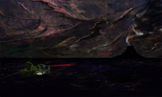
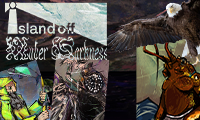
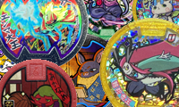

A shitty blog post and some clerical work; updating the IOOD resources to be the IOODuology resources, adding IOODancing resources to it.
Made a larger one about my feelings about a book and my nightmares and classes and IOODancing and other things. And an Afterword.
Yeah guys, I'm back to a regular-ish update schedule. Now that IOODancing's out. This update's just 3 blog posts: blog134, blog135, and blog136. So enjoy them!
Sorry for not updating for, like, over two months? I had to work a lot on IOODancing, which led to a wrist injury, and also I just didn't have a very great summer emotionally, and also I moved two weeks ago, to a new apartment across town. But today I had the energy. Island Off Outer Dancing is now out — go play it! All I did here was add my SGDQ2026 recap and Gigantic Ultra Consumables Review to the blog feed, which both took forever to write. And I tried fixing the RSS feed, so, hopefully it's fixed!


